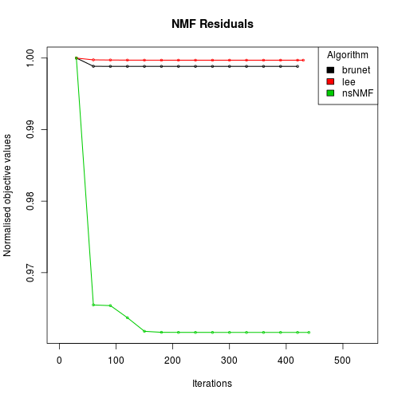

# generate a synthetic dataset with known classes: 50 features, 23 samples (10+5+8)n <- 20; counts <- c(5, 3, 2);p <- sum(counts)x <- syntheticNMF(n, counts)dim(x)[1] 20 10# build the true cluster membershipgroups <- unlist(mapply(rep, seq(counts), counts))# run on a data.frameres <- nmf(data.frame(x), 3)# missing method: use algorithm suitable for seedres <- nmf(x, 2, seed=rnmf(2, x))algorithm(res)[1] "brunet"res <- nmf(x, 2, seed=rnmf(2, x, model='NMFns'))algorithm(res)[1] "nsNMF"# compare some NMF algorithms (tracking the approximation error)res <- nmf(x, 2, list('brunet', 'lee', 'nsNMF'), .options='t')Compute NMF method 'brunet' [1/3] ... OK Compute NMF method 'lee' [2/3] ... OK Compute NMF method 'nsNMF' [3/3] ... OKressummary(res, class=groups)method seed rng metric rank sparseness.basis sparseness.coef purity entropy residuals niter cpu cpu.all nrun brunet brunet random 1 KL 2 0.4118778 0.7477902 0.8 0.3063008 62.88535 420 0.276 0.276 1 lee lee random 1 euclidean 2 0.4584158 0.6203033 0.8 0.4508149 38.55727 430 0.352 0.352 1 nsNMF nsNMF random 1 KL 2 0.4467015 0.8332739 0.8 0.3063008 73.37104 440 0.468 0.468 1# plot the track of the residual errorsplot(res)
# specify algorithm by its nameres <- nmf(x, 3, 'nsNMF', seed=123) # nonsmooth NMF# names are partially matched so this also worksidentical(res, nmf(x, 3, 'ns', seed=123))[1] FALSEres <- nmf(x, 3, 'offset') # NMF with offset# run a custom algorithm defined as a standard functionmyfun <- function(x, start, alpha){ # update starting point # ... basis(start) <- 3 * basis(start) # return updated point start }res <- nmf(x, 2, myfun, alpha=3)algorithm(res)[1] "nmf_d4955358ce8"# error: alpha missingtry( nmf(x, 2, myfun) )# possibly the algorithm fits a non-standard NMF model, e.g. NMFns modelres <- nmf(x, 2, myfun, alpha=3, model='NMFns')modelname(res)[1] "NMFns"# assume a known NMF model compatible with the matrix `x`y <- rnmf(3, x)# fits an NMF model (with default method) on some data using y as a starting pointres <- nmf(x, y)# the fit can be reproduced using the same starting pointnmf.equal(nmf(x, y), res)[1] TRUE# missing method: use default algorithmres <- nmf(x, 3)# Fit a 3-rank model providing an initial value for the basis matrixnmf(x, rmatrix(nrow(x), 3), 'snmf/r')# Fit a 3-rank model providing an initial value for the mixture coefficient matrixnmf(x, rmatrix(3, ncol(x)), 'snmf/l')# default fitres <- nmf(x, 2)summary(res, class=groups)rank sparseness.basis sparseness.coef purity entropy residuals niter cpu 2.0000000 0.4066691 0.8069521 0.8000000 0.3811979 59.8266436 430.0000000 0.2240000 cpu.all nrun 0.2240000 1.0000000# run default algorithm multiple times (only keep the best fit)res <- nmf(x, 3, nrun=10)ressummary(res, class=groups)rank sparseness.basis sparseness.coef purity entropy residuals niter cpu 3.0000000 0.4942528 0.8681468 1.0000000 0.0000000 43.5355376 420.0000000 0.2400000 cpu.all nrun cophenetic dispersion 4.0730000 10.0000000 0.9691177 0.7152000# run default algorithm multiple times keeping all the fitsres <- nmf(x, 3, nrun=10, .options='k')ressummary(res, class=groups)rank sparseness.basis sparseness.coef purity entropy residuals niter cpu 3.0000000 0.4936647 0.8770943 1.0000000 0.0000000 43.5344313 490.0000000 0.2800000 cpu.all nrun cophenetic dispersion 5.4930000 10.0000000 0.9936881 0.6928000## Note: one could have equivalently done# res <- nmf(V, 3, nrun=10, .options=list(keep.all=TRUE))# use a method that fit different modelres <- nmf(x, 2, 'nsNMF')fit(res)# pass parameter theta to the model via `...`res <- nmf(x, 2, 'nsNMF', theta=0.2)fit(res)## handling arguments in `...` and model parametersmyfun <- function(x, start, theta=100){ cat("theta in myfun=", theta, "\n\n"); start }# no conflict: default thetafit( nmf(x, 2, myfun) )theta in myfun= 100# no conlfict: theta is passed to the algorithmfit( nmf(x, 2, myfun, theta=1) )theta in myfun= 1# conflict: theta is used as model parameterfit( nmf(x, 2, myfun, model='NMFns', theta=0.1) )theta in myfun= 100# conflict solved: can pass different theta to model and algorithmfit( nmf(x, 2, myfun, model=list('NMFns', theta=0.1), theta=5) )theta in myfun= 5## USING SEEDING METHODS# run default algorithm with the Non-negative Double SVD seeding method ('nndsvd')res <- nmf(x, 3, seed='nndsvd')## Note: partial match also worksidentical(res, nmf(x, 3, seed='nn'))[1] FALSE# run nsNMF algorithm, fixing the seed of the random number generatorres <- nmf(x, 3, 'nsNMF', seed=123456)nmf.equal(nmf(x, 3, 'nsNMF', seed=123456), res)[1] TRUE# run default algorithm specifying the starting point following the NMF standard modelstart.std <- nmfModel(W=matrix(0.5, n, 3), H=matrix(0.2, 3, p))nmf(x, start.std)# to run nsNMF algorithm with an explicit starting point, this one# needs to follow the 'NMFns' model:start.ns <- nmfModel(model='NMFns', W=matrix(0.5, n, 3), H=matrix(0.2, 3, p))nmf(x, start.ns)# Note: the method name does not need to be specified as it is infered from the# when there is only one algorithm defined for the model.# if the model is not appropriate (as defined by the algorihtm) an error is thrown# [cf. the standard model doesn't include a smoothing parameter used in nsNMF]try( nmf(x, start.std, method='nsNMF') )## Callback functions# Pass a callback function to only save summary measure of each runres <- nmf(x, 3, nrun=3, .callback=summary)# the callback results are simplified into a matrixres$.callback[,1] [,2] [,3] rank 3.0000000 3.0000000 3.0000000 sparseness.basis 0.4944835 0.4944835 0.4840998 sparseness.coef 0.8859355 0.8797291 0.7571591 residuals 43.5357386 43.5357383 46.1936322 niter 430.0000000 430.0000000 460.0000000 cpu 0.2400000 0.2400000 0.2520000 cpu.all 0.2400000 0.2400000 0.2520000 nrun 1.0000000 1.0000000 1.0000000res <- nmf(x, 3, nrun=3, .callback=summary, .opt='-S')# the callback results are simplified into a matrixres$.callback[[1]] rank sparseness.basis sparseness.coef residuals niter cpu cpu.all nrun 3.0000000 0.4936737 0.8763867 43.5344537 440.0000000 0.2440000 0.2440000 1.0000000 [[2]] rank sparseness.basis sparseness.coef residuals niter cpu cpu.all nrun 3.0000000 0.4576692 0.7944182 45.6090785 480.0000000 0.1840000 0.1840000 1.0000000 [[3]] rank sparseness.basis sparseness.coef residuals niter cpu cpu.all nrun 3.0000000 0.4735453 0.8202547 43.9513721 730.0000000 0.3680000 0.3680000 1.0000000# Pass a custom callback functioncb <- function(obj, i){ if( i %% 2 ) sparseness(obj) >= 0.5 }res <- nmf(x, 3, nrun=3, .callback=cb)res$.callback[[1]] basis coef TRUE TRUE [[2]] NULL [[3]] basis coef FALSE TRUE# Passs a callback function which throws an errorcb <- function(){ i<-0; function(object){ i <<- i+1; if( i == 1 ) stop('SOME BIG ERROR'); summary(object) }}res <- nmf(x, 3, nrun=3, .callback=cb())Warning message: NMF::nmf - All NMF fits were successful but 3/3 callback call(s) threw an error. # Callback error(s) thrown: - run #1: SOME BIG ERROR## PARALLEL COMPUTATIONS# try using 3 cores, but use sequential if not possibleres <- nmf(x, 3, nrun=3, .options='p3')# force using 3 cores, error if not possibleres <- nmf(x, 3, nrun=3, .options='P3')# use externally defined clusterlibrary(parallel)cl <- makeCluster(6)res <- nmf(x, 3, nrun=3, .pbackend=cl)# use externally registered backendregisterDoParallel(cl)res <- nmf(x, 3, nrun=3, .pbackend=NULL)